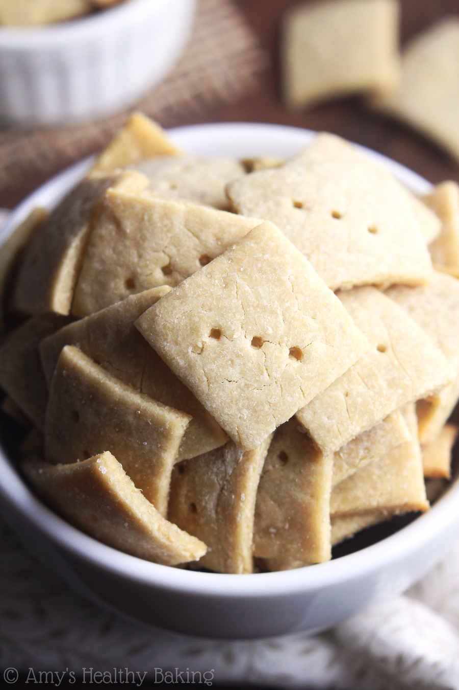
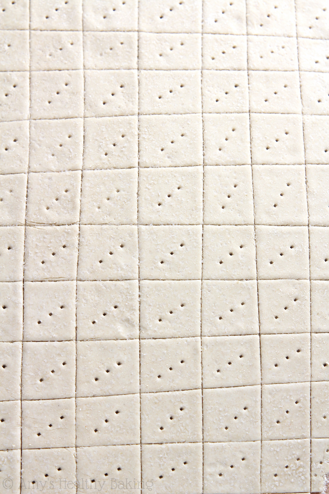

Back
Quinoa Crackers
Ingredients
- 1 cup (120g) quinoa flour (measured correctly), plus more for rolling
- ½ tsp salt
- 1 tsp oil
- 6 tbsp (90mL) warm water


Instructions
- Preheat the oven to 350°F, and set out a large baking sheet. Spread a silicone baking mat onto a level surface, and lightly sprinkle with quinoa flour.
- In a medium bowl, whisk together the quinoa flour and ¼ teaspoon of salt. Make a well in the center. Add in the oil and warm water. Stir until combined.
- Turn out the dough onto the prepare silicone mat. Lightly flour a rolling pin with quinoa flour, and roll out the dough to 1/16” thick. Cut the dough into 1” squares with a pizza cutter, and prick the center of each square with a fork. Sprinkle the remaining ¼ teaspoon of salt on top, and gently press it into the dough.
- Transfer the silicone mat to the baking sheet. Bake at 350°F for 25-30 minutes, or until crunchy. Cool completely to room temperature on the baking mat before transferring to an airtight container.
Source